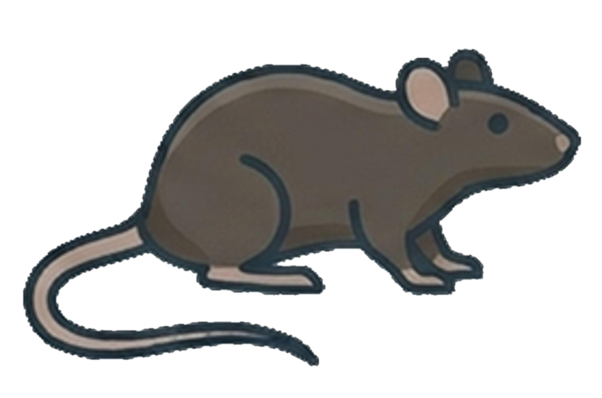
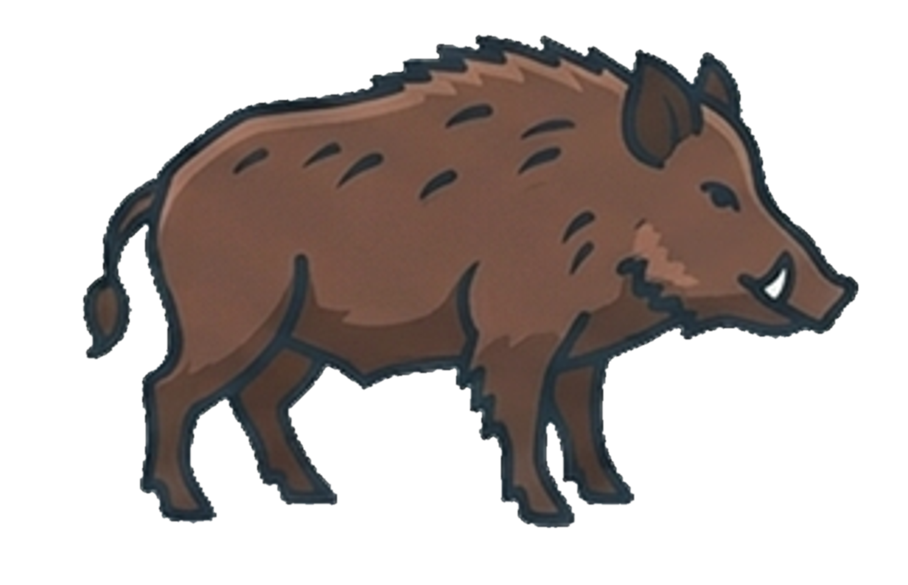

Cross-species transcriptomics of SIRT6 perturbation
Find out what happens to your gene of interest when SIRT6 is switched off or overexpressed - measured across six species, from single studies to a combined cross-species meta-analysis.
6 species · 29 studies · 349 samples · KO/OE/WT perturbations


Datasets
Browse the source RNA-seq studies included in SIRT6.db.
| Study | Organism | Genotypes | Tissue / cell type | N samples |
|---|
DE Results
Browse differential expression results one contrast at a time.
| Gene symbol | Gene ID | Direction |
|---|
Gene Explorer
Compare a gene's expression between perturbation and control groups. Values are DESeq2-normalized counts on a log scale.
Meta-analysis
Conserved signatures of SIRT6 knockout, pooled across species and mapped to human gene orthologs. Knockout studies only.
| Gene | meta log2FC | 95% CI | FDR | I2 | Experiments | Species | Forest plot |
|---|
Downloads
Direct links to Parquet data, clients, and walkthroughs.
Get the complete dataset from the full GitHub repository, or clone it with:
git clone https://github.com/SIRT6/SIRT6.db.git
Methods
Data and preprocessing. Bulk RNA-seq datasets for six species - Homo sapiens, Mus musculus, Rattus norvegicus, Macaca fascicularis, Sus scrofa, and Drosophila melanogaster - were retrieved from public repositories (NCBI GEO and GSA-Human). Raw reads were processed with the nf-core/rnaseq pipeline: quality assessment with FastQC, adapter and quality trimming with Trim Galore! (Phred < 20), and gene-level quantification by Salmon pseudo-alignment against each species' Ensembl reference genome.
Differential expression. Differential expression was computed with DESeq2 for each species and comparison, comparing each perturbation against wild-type controls and adjusting for sex, age, and strain where available. Experiments were stratified by treatment, cell type, tissue, or condition where applicable. Low-count genes were filtered per contrast (a gene was kept only if, in both groups, it had ≥10 counts in at least half the samples, or two samples, whichever was larger). Genes were called differentially expressed at FDR < 0.05 and |log₂FC| > 0.58.
Cross-species meta-analysis. Genes were harmonized across species using 1:1 human orthologs from Ensembl (v115, via biomaRt), keeping only protein-coding orthologs. A three-level random-effects meta-analysis (metafor::rma.mv()) was then fitted, with species and experiment as nested random effects and a phylogenetic correlation matrix derived from divergence times (TimeTree). The knockout meta-analysis covered 13,359 orthologous genes across 39 experiments in all six species; genes were required to appear in at least three species and two experiments.
About
SIRT6.db is a public companion resource for the study of SIRT6 perturbation in aging-related biology. It brings together transcriptomic data from SIRT6 knockout, overexpression, and mutant experiments across six species, with harmonized differential expression and a cross-species meta-analysis of conserved SIRT6-responsive genes. It is designed for browsing, visualization, and download of the accompanying publication's data package.
What's inside
The resource covers 29 RNA-seq studies (349 samples) across six species:
- Homo sapiens (human)
- Mus musculus (mouse)
- Rattus norvegicus (rat)
- Macaca fascicularis (crab-eating macaque)
- Sus scrofa (pig)
- Drosophila melanogaster (fruit fly)
Each study compares one or more SIRT6 perturbations against wild-type controls. Perturbation types include:
- Knockout (KO)
- Overexpression (OE)
- Point mutants (OE/K3Q, OE/K3R)
- Heterozygous (Het)
Data available through the site: source study metadata (Datasets), per-contrast differential expression (DE Results), single-gene expression across conditions (Gene Explorer), and a cross-species knockout meta-analysis with forest plots (Meta-analysis). All underlying data and analysis clients are available in Downloads.
How to cite
SIRT6.db v0.0.2. Please cite the associated manuscript and the Zenodo DOI (to be added on publication).
Contact
[Author name(s), affiliation, and contact email - to be added before publication.]
Related links
- GitHub repository
- Associated publication - to be added
- MIT License